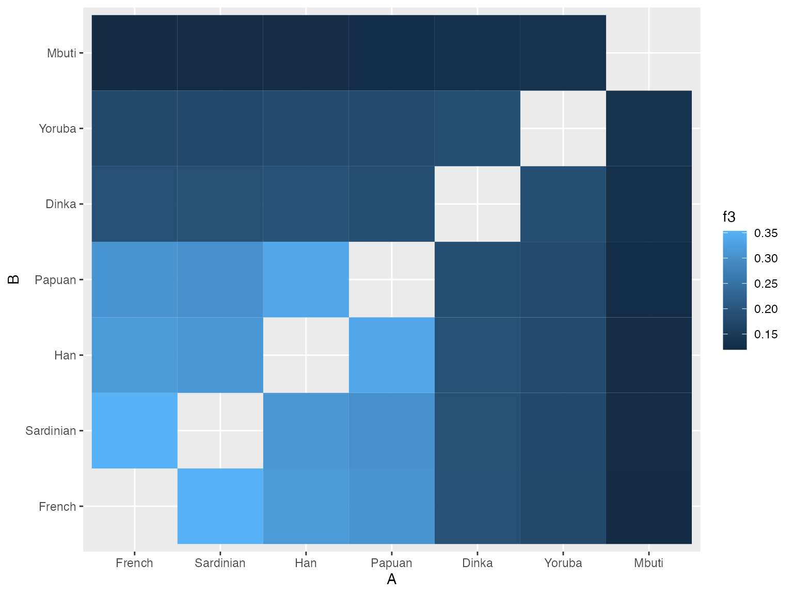

This vignette describes how to perform various population admixture analyses with the admixr package, using the ADMIXTOOLS software suite for the underlying calculations.
Introduction
ADMIXTOOLS is a widely used software package for calculating admixture statistics and testing population admixture hypotheses. However, although powerful and comprehensive, it is not exactly known for being user-friendly.
A typical ADMIXTOOLS workflow often involves a combination of sed/awk/shell scripting and manual editing to create different configuration files. These are then passed as command-line arguments to one of ADMIXTOOLS commands, and control how to run a particular analysis. The results are then redirected to another file, which has to be parsed by the user to extract values of interest, often using command-line utilities again or (worse) by manual copy-pasting. Finally, the processed results are analysed in R, Excel or another program.
This workflow is very cumbersome, especially if one wants to explore many hypotheses involving different combinations of populations. Most importantly, however, it makes it difficult to follow the rules of best practice for reproducible science, as it is nearly impossible to construct fully automated reproducible “pipelines”.
This R package makes it possible to perform all stages of ADMIXTOOLS analyses entirely from R, completely removing the need for “low level” configuration of individual ADMIXTOOLS programs and allowing users to focus on the analysis itself.
Installation
Note that in order to use the admixr package, you need a working installation of ADMIXTOOLS! You can find installation instructions here.
Furthermore, you need to make sure that R can find ADMIXTOOLS binaries on the $PATH. If this is not the case, running library(admixr) will show a warning message with instructions on how to fix this.
To install admixr from GitHub you need to install the package devtools first. To do this, you can simply run (in R):
Furthermore, if you want to follow the examples in this vignette, you will need the tidyverse collection of packages for convenient manipulation and plotting of data, which you can install with:
When everything is ready, you can run the following code to make functions in both packages available:
library(admixr)
library(tidyverse)
── Attaching packages ────────────────────────────────────────────────────────────── tidyverse 1.2.1 ──
✔ ggplot2 3.0.0 ✔ purrr 0.2.5
✔ tibble 1.4.2 ✔ dplyr 0.7.8
✔ tidyr 0.8.2 ✔ stringr 1.3.1
✔ readr 1.2.1 ✔ forcats 0.3.0
── Conflicts ───────────────────────────────────────────────────────────────── tidyverse_conflicts() ──
✖ dplyr::filter() masks stats::filter()
✖ dplyr::lag() masks stats::lag()A note about EIGENSTRAT format
ADMIXTOOLS software uses a peculiar set of genetic file formats, which may seem strange if you are used to working with VCF files. However, the basic idea remains the same - we want to store and access SNP data (REF/ALT alleles) of a set of individuals at a defined set of genomic positions.
EIGENSTRAT datasets always contain three kinds of files:
-
indfile - specifies a unique name, sex (optional - can be simply “U” for “undefined”) and label (such as population assignment) of each sample; -
snpfile - specifies the positions of SNPs, REF/ALT alleles etc.; -
genofile - contains SNP data (one row per site, one character per sample) in a dense string-based format:- 0: individual is homozygous ALT
- 1: individual is a heterozygote
- 2: individual is homozygous REF
- 9: missing data
Therefore, a VCF file is essentially a combination of all three files in a single package. Luckily for us, all three EIGENSTRAT files usually share a common path and prefix and should be placed in a single directory.
Let’s first download a small testing SNP dataset using a built-in admixr function download_data(). This function downloads the data into a temporary directory (you can specify the destination using its dirname argument). In addition to this, the function returns a shared prefix of the whole dataset.
(prefix <- download_data())
[1] "/var/folders/kk/s4cwdkx90pscz314mp0hhz480000gn/T//RtmpxCsmEX/snps/snps"We can verify that there are indeed three files with this prefix:
list.files(path = dirname(prefix), pattern = basename(prefix), full.names = TRUE)
[1] "/var/folders/kk/s4cwdkx90pscz314mp0hhz480000gn/T//RtmpxCsmEX/snps/snps.geno"
[2] "/var/folders/kk/s4cwdkx90pscz314mp0hhz480000gn/T//RtmpxCsmEX/snps/snps.ind"
[3] "/var/folders/kk/s4cwdkx90pscz314mp0hhz480000gn/T//RtmpxCsmEX/snps/snps.snp" Let’s look at their contents:
ind file
Chimp U Chimp
Mbuti U Mbuti
Yoruba U Yoruba
Khomani_San U Khomani_San
Han U Han
Dinka U Dinka
Sardinian U Sardinian
Papuan U Papuan
French U French
Vindija U Vindija
Altai U Altai
Denisova U DenisovaThe first column (sample name) and the third column (population label) are generally not the same (sample names often have numerical suffixes to make them unique, etc.), but we kept them the same for simplicity. Importantly, when specifying population/sample arguments in admixr functions, the information in the third column is what is used. For example, if you have individuals such as “French1”, “French2”, “French3” in the first column of an ind file, all three sharing a “French” population label in the third column, specifying “French” in an admixr function will combine all three samples in a single population and work with it as a whole, instead of working with each individual separately.
Philosophy of admixr
The goal of admixr is to make ADMIXTOOLS analyses as trivial to run as possible, without having to worry about par/pop/left/right configuration files (as they are known in the jargon of ADMIXTOOLS) and other low-level details.
The only interface between you and ADMIXTOOLS is the following set of R functions:
Anything that would normally require dozens of lines of shell scripts can be often accomplished by running a single line of R code.
Internal representation of EIGENSTRAT data
As we saw above, each EIGENSTRAT dataset has three components. The way this data is internally represented in admixr is using a small S3 R object created using the eigenstrat constructor function. This function accepts the path and prefix of a trio of EIGENSTRAT snp/ind/geno files and returns an R object of the EIGENSTRAT class:
snps
#> EIGENSTRAT object
#> =================
#> components:
#> ind file: /var/folders/kk/s4cwdkx90pscz314mp0hhz480000gn/T//RtmpxCsmEX/snps/snps.ind
#> snp file: /var/folders/kk/s4cwdkx90pscz314mp0hhz480000gn/T//RtmpxCsmEX/snps/snps.snp
#> geno file: /var/folders/kk/s4cwdkx90pscz314mp0hhz480000gn/T//RtmpxCsmEX/snps/snps.genoThis object simply encapsulates the paths to all three EIGENSTRAT components and makes it easy to pass the data to different admixr functions.
The following couple of sections describe how to use the admixr package on a set of example analyses.
\(D\) statistic
Let’s say we are interested in the following question: "Which populations today show evidence of Neanderthal admixture?
One way of looking at this is using the following D statistic: \[D(\textrm{present-day human W}, \textrm{African}, \textrm{Neanderthal}, \textrm{Chimp}).\]
\(D\) statistics are based on comparing the proportions of BABA and ABBA sites patterns observed in data:
\[D = \frac{\textrm{# BABA sites - # ABBA sites}}{\textrm{# BABA sites + # ABBA sites}}.\]
Significant departure of \(D\) from zero indicates an excess of allele sharing between the first and the third population (positive \(D\)), or an excess of allele sharing between the second and the third population (negative \(D\)). If we get \(D\) that is not significantly different from 0, this suggests that the first and second populations form a clade, and don’t differ in their genetic affinity to the third population (this is the null hypothesis that the data is compared against).
Therefore, our \(D\) statistic above simply tests whether some modern humans today admixed with Neanderthals, which would increase their genetic affinity to this archaic group compared to Africans (whose ancestors never met Neanderthals).
Let’s save some population names first to make the code below more readable:
Using the admixr package we can then calculate the \(D\) statistic above simply by running:
The result is a following data.frame:
| W | X | Y | Z | D | stderr | Zscore | BABA | ABBA | nsnps |
|---|---|---|---|---|---|---|---|---|---|
| French | Yoruba | Vindija | Chimp | 0.0313 | 0.006933 | 4.510 | 15802 | 14844 | 487753 |
| Sardinian | Yoruba | Vindija | Chimp | 0.0287 | 0.006792 | 4.222 | 15729 | 14852 | 487646 |
| Han | Yoruba | Vindija | Chimp | 0.0278 | 0.006609 | 4.199 | 15780 | 14928 | 487925 |
| Papuan | Yoruba | Vindija | Chimp | 0.0457 | 0.006571 | 6.953 | 16131 | 14721 | 487694 |
| Khomani_San | Yoruba | Vindija | Chimp | 0.0066 | 0.006292 | 1.051 | 16168 | 15955 | 487564 |
| Mbuti | Yoruba | Vindija | Chimp | -0.0005 | 0.006345 | -0.074 | 15751 | 15766 | 487642 |
We can see that in addition to the input information, this data.frame contains additional columns:
-
D- \(D\) statistic value -
stderr- standard error of the \(D\) statistic calculated using the block jackknife -
Zscore- \(Z\)-zscore value (number of standard errors the \(D\) is from 0, i.e. how strongly do we reject the null hypothesis of no admixture) -
BABA,ABBA- counts of observed site patterns -
nsnps- number of SNPs used for a give calculation
(Output tables from other admixr functions follow a very similar format.)
While we could certainly make some inferences by looking at the \(Z\)-scores, tables in general are not the best representation of this kind of data, especially as the number of samples increases. This is how we can use the ggplot2 package to plot the results:
ggplot(result, aes(fct_reorder(W, D), D, color = abs(Zscore) > 2)) +
geom_point() +
geom_hline(yintercept = 0, linetype = 2) +
geom_errorbar(aes(ymin = D - 2 * stderr, ymax = D + 2 * stderr))
(If you want to more know about data analysis using R, including plotting with ggplot2, I highly recommend this free book.)
We can see that all three Africans have \(D\) values not significantly different from 0, meaning that the data is consistent with the null hypothesis of no Neanderthal ancestry in Africans. On the other hand, the test rejects the null hypothesis for all non-Africans today, suggesting that Neanderthals admixed with the ancestors of present-day non-Africans. In fact, this is a similar test to the one that was used as evidence supporting the Neanderthal admixture hypothesis in the first place!
\(f_4\) statistic
An alternative way of addressing the previous question is to use the \(f_4\) statistic, which is very similar to \(D\) statistic and can be calculated as:
\[ f_4 = \frac{\textrm{# BABA sites - # ABBA sites}}{\textrm{# sites}}\]
Again, significant departure of \(f_4\) from 0 is informative about gene flow, in a way analogous to \(D\) statistic.
To repeat the previous analysis using \(f_4\) statistic, we can run:
| W | X | Y | Z | f4 | stderr | Zscore | BABA | ABBA | nsnps |
|---|---|---|---|---|---|---|---|---|---|
| French | Yoruba | Vindija | Chimp | 0.001965 | 0.000437 | 4.501 | 15802 | 14844 | 487753 |
| Sardinian | Yoruba | Vindija | Chimp | 0.001798 | 0.000427 | 4.209 | 15729 | 14852 | 487646 |
| Han | Yoruba | Vindija | Chimp | 0.001746 | 0.000418 | 4.178 | 15780 | 14928 | 487925 |
| Papuan | Yoruba | Vindija | Chimp | 0.002890 | 0.000417 | 6.924 | 16131 | 14721 | 487694 |
| Khomani_San | Yoruba | Vindija | Chimp | 0.000436 | 0.000415 | 1.051 | 16168 | 15955 | 487564 |
| Mbuti | Yoruba | Vindija | Chimp | -0.000030 | 0.000410 | -0.074 | 15751 | 15766 | 487642 |
We can see by comparing this to the \(D\) statistic result above that we can make the same conclusions.
You might be wondering why we have both \(f_4\) and \(D\) if they are so similar. The truth is that \(f_4\) is, among other things, directly informative about the amount of shared genetic drift (“branch length”) between pairs of populations, which is, in many cases, a very useful theoretical property. Other than that, it’s often a matter of personal preference and so admixr provides separate functions for calculating both.
\(f_4\)-ratio statistic
Now we know that non-Africans today carry some Neanderthal ancestry. But what if we want to know how much Neanderthal ancestry they have? What proportion of their genomes is of Neanderthal origin?
Unfortunately, we don’t have enough space here to explain all the details about the inner workings of \(f_4\)-ratio statistic. However, in general, when we are interested in estimating the proportion of ancestry in a population \(X\) coming some parental lineage \(B\), we can use a ratio of two \(f_4\) statistics.
\[f_4\textrm{-ratio} = \frac{f_4(A, O; X, C)}{f_4(A, O; B, C)}.\]
Using amidxr, we can calculate \(f_4\)-ratios using the following code (X being a vector of samples for which we want to estimate Neanderthal ancestry):
The ancestry proportion (a number between 0 and 1) is given in the alpha column:
| A | B | X | C | O | alpha | stderr | Zscore |
|---|---|---|---|---|---|---|---|
| Altai | Vindija | French | Yoruba | Chimp | 0.023774 | 0.006173 | 3.851 |
| Altai | Vindija | Sardinian | Yoruba | Chimp | 0.024468 | 0.006079 | 4.025 |
| Altai | Vindija | Han | Yoruba | Chimp | 0.022117 | 0.005901 | 3.748 |
| Altai | Vindija | Papuan | Yoruba | Chimp | 0.037311 | 0.005821 | 6.410 |
| Altai | Vindija | Khomani_San | Yoruba | Chimp | 0.003909 | 0.005923 | 0.660 |
| Altai | Vindija | Mbuti | Yoruba | Chimp | 0.000319 | 0.005721 | 0.056 |
ggplot(result, aes(fct_reorder(X, alpha), alpha, color = abs(Zscore) > 2)) +
geom_point() +
geom_errorbar(aes(ymin = alpha - 2 * stderr, ymax = alpha + 2 * stderr)) +
geom_hline(yintercept = 0, linetype = 2) +
labs(y = "Neandertal ancestry proportion", x = "present-day individual")
We can make several observations:
- Again, we don’t see any significant Neanderthal ancestry in present-day Africans (proportion is consistent with 0%), which is what we confirmed using \(D\) and \(f_4\) above.
- Present-day non-Africans carry between 2-3% of Neanderthal ancestry.
- We see a much higher proportion of Neanderthal ancestry in people from Papua New Guinea - more than 4%! This is consistent with earlier studies that suggest additional archaic admixture events in the ancestors of present-day Papuans.
\(f_3\) statistic
The \(f_3\) statistic, also known as the 3-population statistic, is useful whenever we want to:
- Estimate the branch length (shared genetic drift) between a pair of populations \(A\) and \(B\) with respect to a common outgroup \(C\). In this case, the higher the \(f_3\) value, the longer the shared evolutionary time between \(A\) and \(B\).
- Test whether population \(C\) is a mixture of two parental populations \(A\) and \(B\). Negative value of the \(f_3\) statistic then serves as statistical evidence of this admixture.
As an example, imagine we are interested in relative divergence times between pairs of present-day human populations, and want to know in which approximate order they split of from each other. To address this problem, we could use \(f_3\) statistic by fixing the \(C\) outgroup as San, and calculating pairwise \(f_3\) statistics between all pairs of present-day modern humans.
pops <- c("French", "Sardinian", "Han", "Papuan", "Mbuti", "Dinka", "Yoruba")
result <- f3(A = pops, B = pops, C = "Khomani_San", data = snps)| A | B | C | f3 | stderr | Zscore | nsnps |
|---|---|---|---|---|---|---|
| French | French | Khomani_San | 0.000000 | -1.000000 | 0.000 | -1 |
| French | Sardinian | Khomani_San | 0.353447 | 0.012527 | 28.215 | 249760 |
| French | Han | Khomani_San | 0.316964 | 0.011914 | 26.604 | 253158 |
| French | Papuan | Khomani_San | 0.306962 | 0.011708 | 26.218 | 251648 |
| French | Mbuti | Khomani_San | 0.119283 | 0.008448 | 14.119 | 271501 |
| French | Dinka | Khomani_San | 0.190141 | 0.010049 | 18.922 | 276964 |
# sort the population labels according to an increasing f3 value relative to French
ordered <- filter(result, A == "Mbuti", B != "Mbuti") %>% arrange(f3) %>% .[["B"]] %>% c("Mbuti")
# plot heatmap of pairwise f3 values
result %>%
filter(A != B) %>%
mutate(A = factor(A, levels = ordered),
B = factor(B, levels = ordered)) %>%
ggplot(aes(A, B)) + geom_tile(aes(fill = f3))
We can see that when we order the heatmap labels based on values of pairwise \(f_3\) statistics, the (already known) order of population splits pops up beautifully (i.e. San separated first, followed by Mbuti, etc.).
qpWave and qpAdm
Both qpWave and qpAdm can be though of as more complex and powerful extensions of the basic idea behind a simple \(f_4\) statistic. Building upon this idea and generalizing it, the qpWave method makes it possible to find the lowest number of “streams of ancestry” between two groups of populations that is consistent with the data. Extending the concept of \(f_4\) statistics even further, qpAdm allows to find the proportions of ancestry from a set of ancestral populations that contributed ancestry to our sample or population of interest.
Unfortunately, both methods represent a rather advanced topic that still lacks a proper documentation and beginner-friendly tutorials, and explaining them in detail is beyond the scope of this vignette. If you want to use them, it’s highly recommended that you read the official documentation decribing the basic ideas of both methods (distributed with ADMIXTOOLS), and that you read the relevant supplementary sections of papers published by David Reich’s group. At the very least, I recommend reading:
Note S6 of “Reconstructing Native American population history” by Reich et al. This paper first introduced the theoretical background of what later became qpWave.
Supplementary Information 10 of “Massive migration from the steppe was a source for Indo-European languages in Europe” by Haak et al., which gives a more consise overview of the qpWave method than S6 of Reich et al. 2012, and also introduces the qpAdm methodology for estimating admixture proportions.
If you read these papers and the tutorial distributed with the ADMIXTOOLS carefully, you will have a solid understanding of both qpWave and qpAdm.
In the remainder of this section, I will assume that you are familiar with both methods, and will only explain how admixr makes running them much easier.
qpWave
To run qpWave, you must provide a list of left and right populations (using the terminology of Haak et al. 2015 above). The aim of the method is to get an idea about the number of migration waves from right to left (with no back-migration from left to right!). This is done by estimating the rank of a matrix of all possible \(f_4\) statistics
\[f_4(\textrm{left}_1, \textrm{left}_i; \textrm{right}_1, \textrm{right}_i),\]
where \(\textrm{left}_1\) and \(\textrm{right}_1\) are some fixed populations and the \(i\) and \(j\) indices run over all other possible choices of populations.
As an example, let’s try to find the number of admixture waves from right = {Yoruba, Mbuti, Alta} into left = {French, Sardinian, Han}. We can do this using the function qpWave(), setting its arguments appropriately:
result <- qpWave(
left = c("French", "Sardinian", "Han"),
right = c("Altai", "Yoruba", "Mbuti"),
data = snps
)The qpWave() function returns a data frame which shows the results of a series of matrix rank tests. The rank column is the matrix rank tested, df, chisq and tail give …, and dfdiff, chisqdiff and taildiff give the same, but always comparing the fit to the fit of a rank immediately lower.
| rank | df | chisq | tail | dfdiff | chisqdiff | taildiff |
|---|---|---|---|---|---|---|
| 0 | 4 | 1.758 | 0.7801969 | 0 | 0.000 | 1.0000000 |
| 1 | 1 | 0.192 | 0.6614221 | 3 | 1.566 | 0.6671280 |
| 2 | 0 | 0.000 | 1.0000000 | 1 | 0.192 | 0.6614221 |
In this example, we see that matrix \(r = 0\) cannot be rejected (tail \(p\)-value = 0.684 - not rejected). Because Reich et al. 2012 showed that \(r + 1 \le n\), where \(n\) is the number of admixture waves, we can interpret this as left populations having at least \(n = 1\) streams of ancestry from the set of right populations. In this case, the most likely explanation is Neandertal admixture in non-Africans today.
Now, what happens if we add Papuans to the left group?
result <- qpWave(
left = c("Papuan", "French", "Sardinian", "Han"),
right = c("Altai", "Yoruba", "Mbuti"),
data = snps
)| rank | df | chisq | tail | dfdiff | chisqdiff | taildiff |
|---|---|---|---|---|---|---|
| 0 | 6 | 29.150 | 0.0000570 | 0 | 0.000 | 1.0000000 |
| 1 | 2 | 0.603 | 0.7395638 | 4 | 28.547 | 0.0000097 |
| 2 | 0 | 0.000 | 1.0000000 | 2 | 0.603 | 0.7395638 |
We can now clearly reject rank \(r = 0\), but we see that the data is consistent with rank \(r = 1\), meaning that there must have been at least \(n = 2\) streams of ancestry from right to left populations (\(r + 1 \le n\)). Because this happened after we introduced Papuans to the left set, this could indicate a separate pulse of archaic introgression into Papuans, which is not surprising given what we know about the geographical patterns of archaic admixture in non-Africans today, and significantly more introgression observed in Papuans than any other present-day population.
qpAdm
The qpAdm method can be used to find, for a given target population, the proportions of ancestry coming from a set of ancestral populations. Importantly, since we often lack accurate representatives of the true ancestral populations, we can use a set of reference populations instead, under a crucial assumption that the references set is phylogenetically closer to true ancestral populations than a set of specified outgroups. For example, coming back to our example of using \(f_4\)-ratio statistics to estimate the proportions of Neandertal ancestry in people today, we could define:
- some Europeans as the target;
- Vindija Neanderthal and an African as two reference populations (two potential sources of ancestries in Europeans today);
- outgroup populations as Chimp, Altai Neanderthal and Denisovan (which are all further from the true ancestral populations - here Vindija and African - than the reference populations).
Having defined all three population sets, we can run qpAdm with:
result <- qpAdm(
target = c("Sardinian", "Han", "French"),
sources = c("Vindija", "Yoruba"),
outgroups = c("Chimp", "Denisova", "Altai"),
data = snps
)The qpAdm() function has an argument details (default TRUE) which makes the function return a list of three elements:
-
proportions- data frame with admixture proportions - this is what we care about; -
ranks- results of rank tests performed by qpWave - these evaluate how well does the assumed traget-references-outgroups population model match the data; -
subsets- results of the “all subsets” analysis (see the documentation for more details.
Let’s start with the ranks element:
| target | rank | df | chisq | tail | dfdiff | chisqdiff | taildiff |
|---|---|---|---|---|---|---|---|
| Sardinian | 1 | 1 | 0.006 | 0.9362605 | 3 | -0.006 | 1.0000000 |
| Sardinian | 2 | 0 | 0.000 | 1.0000000 | 1 | 0.006 | 0.9362605 |
| Han | 1 | 1 | 2.144 | 0.1431157 | 3 | -2.144 | 1.0000000 |
| Han | 2 | 0 | 0.000 | 1.0000000 | 1 | 2.144 | 0.1431157 |
| French | 1 | 1 | 3.814 | 0.0508171 | 3 | -3.814 | 1.0000000 |
| French | 2 | 0 | 0.000 | 1.0000000 | 1 | 3.814 | 0.0508171 |
The row with rank = 1 represents a qpWave test with all \(n\) reference populations set as the left set and all outgroups as the right set, and evaluates whether the ancestral sources themselves are descended from \(n\) independent streams of ancestry. In our case, \(n = 2\) (Mbuti and Vindija), which means that the data would have to be consistent with rank \(r = 1\) to satisfy the inequality \(r + 1 \le n\) proved by Reich et al., 2012. We see that this is true for all three target populations (\(p\)-value > 0.05 for all targets), and the simple model thus seems to be reasonably consistent with the data.
The rank = 2 row represents a qpWave test after adding a target population to the left group together with the references. This test makes sure that including the target population does not increase the rank of the \(f_4\) matrix, meaning that the target can be really modelled as a mixture of ancestries from the reference set. If the \(p\)-values turn out to be very low, this indicates that the assumed model does not fit the data very well and that a part of the ancestry in target possibly cannot be traced to any of the references. In our case, however, all rank = 2 test \(p\)-values do not appear significant, and we can be reasonably sure that the target samples can be fully modelled as a mixtures of all specified references.
Having made sure that our model is reasonably correct, we can now have a look at the proportions element, that contains an estimated admixture proportion from all specified sources, as well as standard errors for those proportion estimated using a block jackknife:
| target | Vindija | Yoruba | stderr_Vindija | stderr_Yoruba | nsnps |
|---|---|---|---|---|---|
| Sardinian | 0.0246924 | 0.9753076 | 0.006 | 0.006 | 499314 |
| Han | 0.0206268 | 0.9793732 | 0.006 | 0.006 | 499654 |
| French | 0.0215749 | 0.9784251 | 0.006 | 0.006 | 499434 |
If we compare this result to the \(f_4\)-ratio values calculated above, we see that the qpAdm estimates are very close to what we got earlier.
The third element in the list of results shows the outcome of an “all subsets” analysis, which involves testing all subsets of potential source populations. Each 1 in the “pattern” column means that the proportion of ancestry from that particular source population (in the order specified originally by the user) was forced to 0.0.
| target | pattern | wt | dof | chisq | tail | Vindija | Yoruba |
|---|---|---|---|---|---|---|---|
| Sardinian | 00 | 0 | 1 | 0.006 | 0.9362610 | 0.025 | 0.975 |
| Sardinian | 01 | 1 | 2 | 15953.171 | 0.0000000 | 1.000 | 0.000 |
| Sardinian | 10 | 1 | 2 | 16.564 | 0.0002530 | 0.000 | 1.000 |
| Han | 00 | 0 | 1 | 2.144 | 0.1431160 | 0.021 | 0.979 |
| Han | 01 | 1 | 2 | 14965.791 | 0.0000000 | 1.000 | 0.000 |
| Han | 10 | 1 | 2 | 14.454 | 0.0007269 | 0.000 | 1.000 |
| French | 00 | 0 | 1 | 3.814 | 0.0508171 | 0.022 | 0.978 |
| French | 01 | 1 | 2 | 15441.258 | 0.0000000 | 1.000 | 0.000 |
| French | 10 | 1 | 2 | 16.028 | 0.0003308 | 0.000 | 1.000 |
Grouping samples
What we’ve been doing so far was calculating statistics for individual samples. However, it is often useful to treat multiple samples as a single group or population. admixr provides a function called relabel that does just that.
Here is an example: let’s say we want to run a similar analysis to the one described in the \(D\) statistic section, but we want to treat Europeans, Africans and archaics combined populations. But the ind file that we have does not contain grouped labels - each sample stands on its own:
Chimp U Chimp
Mbuti U Mbuti
Yoruba U Yoruba
Khomani_San U Khomani_San
Han U Han
Dinka U Dinka
Sardinian U Sardinian
Papuan U Papuan
French U French
Vindija U Vindija
Altai U Altai
Denisova U DenisovaTo merge several individual samples under a combined label we can call group_labels like this:
# paths to the original ind file and a new modified ind file, which will
# contain merged population labels
modif_snps <- relabel(
snps,
European = c("French", "Sardinian"),
African = c("Dinka", "Yoruba", "Mbuti", "Khomani_San"),
Archaic = c("Vindija", "Altai", "Denisova")
)modif_snps
#> EIGENSTRAT object
#> =================
#> components:
#> ind file: /var/folders/kk/s4cwdkx90pscz314mp0hhz480000gn/T//RtmpxCsmEX/snps/snps.ind
#> snp file: /var/folders/kk/s4cwdkx90pscz314mp0hhz480000gn/T//RtmpxCsmEX/snps/snps.snp
#> geno file: /var/folders/kk/s4cwdkx90pscz314mp0hhz480000gn/T//RtmpxCsmEX/snps/snps.geno
#>
#> modifiers:
#> groups: /var/folders/kk/s4cwdkx90pscz314mp0hhz480000gn/T//RtmpxCsmEX/fileafb6477af501.indWe can see that the function relabel returned a modified EIGENSTRAT object, which contains a new item in the “modifiers” section - the path to a new ind file that will be used in downstream analyses. Let’s look at its contents:
Chimp U Chimp
Mbuti U African
Yoruba U African
Khomani_San U African
Han U Han
Dinka U African
Sardinian U European
Papuan U Papuan
French U European
Vindija U Archaic
Altai U Archaic
Denisova U ArchaicHaving the modified EIGENSTRAT object ready, we can then use “European”, “African” and “Archaic” labels in any of the admixr wrapper functions described above. For example:
Here is the result, showing (as we’ve seen above for individual samples) that Europeans show genetic affinity to archaic humans compared to Africans today:
| W | X | Y | Z | D | stderr | Zscore | BABA | ABBA | nsnps |
|---|---|---|---|---|---|---|---|---|---|
| European | African | Archaic | Chimp | 0.0225 | 0.004404 | 5.117 | 15487 | 14805 | 489003 |
Note that the d() function correctly picks up the “group modifier” ind file from the provided EIGENSTRAT object and uses it in place of the original ind file.
Counting present/missing SNPs
The count_snps function can be useful for quality control, weighting of admixture statistics (\(D\), \(f_4\), etc.) for regression analyses etc. There are two optional arguments:
-
prop- changes whether to report SNP counts or proportions (set toFALSEby default), -
missing- controls whether to count missing SNPs instead of present SNPs (set toFALSEby default).
For each sample, count the SNPs present in that sample:
| id | sex | label | present |
|---|---|---|---|
| Chimp | U | Chimp | 491273 |
| Mbuti | U | Mbuti | 499334 |
| Yoruba | U | Yoruba | 499246 |
| Khomani_San | U | Khomani_San | 499250 |
| Han | U | Han | 499654 |
| Dinka | U | Dinka | 499362 |
| Sardinian | U | Sardinian | 499314 |
| Papuan | U | Papuan | 499377 |
| French | U | French | 499434 |
| Vindija | U | Vindija | 497544 |
| Altai | U | Altai | 497729 |
| Denisova | U | Denisova | 497398 |
Data filtering
Filtering based on a BED file
A common situation in genomics is performing an analysis on a subset of the genome. However, EIGENSTRAT is a rather obscure file format which makes it very difficult to find bioinformatics tools that support it. Luckily, admixr includes a function filter_bed() that takes an EIGENSTRAT object and a BED file as inputs and produces a new object that contains a “excluded” modifier, describing which sites did not pass the filtering and must be excluded from an analysis later.
# run this if your BED file contains regions to keep in an analysis
new_snps <- filter_bed(snps, bed)
# run this if your BED file contains regions to remove from an analysis
new_snps <- filter_bed(snps, "regions.bed", remove = TRUE)
# run this if you want the filter_bed function to save the "exclude"
# file to a specified location - can be useful for debugging
new_snps <- filter_bed(snps, "regions.bed", outfile = "filtered_snps.snp")If we want to run the whole analysis in a single pipeline, we can use the %>% pipe operator and do the following:
(The %>% operator simply takes what is on its left side and puts it as a first argument of a function on the right side. While it takes some time to get used to, it is very useful in longer multi-step “pipelines” because it makes more pipelines much more readable. In fact, the resulting code often reads almost like English! The %>% pipe is automatically imported when you load the tidyverse library, and you can read about it more here.)
This is because in the formal definitions of admixr function, data = is always the argument, so we don’t have to specify it manually.
Important: the set of sites to be removed that is generated after running filter_bed() is actually saved into a file (it’s a requirement of the underlying ADMIXTOOLS software)! While the function makes it very easy to do filtering without worrying about locations of intermediate files, it is important to keep in mind that the function still creates them. If you plan to run many independent calculations on a filtered subset of the data, it’s better to save the new EIGENSTRAT object to a variable first and re-use the same object multiple times, rather than running the whole pipeline for each analysis separately (which would create new copies of the intermediate file for each iteration).
(Note for ADMIXTOOLS powerusers: There is a rather obscure option called badsnpfile, which specifies the path to a snp file with colrdinates of sites to exclude from the calculation. The file specified in an “exclude” modifier of an EIGENSTRAT object simply fills in the badsnpfile parameter before starting an ADMIXTOOLS command.)
Filtering out potential ancient DNA damage SNPs
In an ancient DNA world, we often need to repeat an analysis on a subset of data that is less likely to be influenced by ancient DNA damage, to verify that our results are not caused by artifacts in the data (due to biochemical properties of DNA degradation, ancient DNA damage will lead to an increase in C→T and G→A substitutions). Using a similar method described in the BED filtering section above, we can use the filter_damage() function to generate a snp file with positions that carry transitions (C→T and G→A sites), that can be removed using the exclude = argument of the main admixr functions.
# generate snp file with positions of transitions
new_snps <- transversions_only(snps)
# perform the calculation only on transversions
d(W = "French", X = "Dinka", Y = "Altai", Z = "Chimp", data = new_snps)Again, we could combine several filtering steps into one pipeline:
Merging EIGENSTRAT datasets
Another useful data processing function is merge_eigenstrat. This function takes two EIGENSTRAT datasets and merges them, producing a union of samples and intersection of SNPs from both of them. It returns a new EIGENSTRAT object that can be directly used in admixr analyses.